Page 1 / 原始页码 727
第38章 植物体
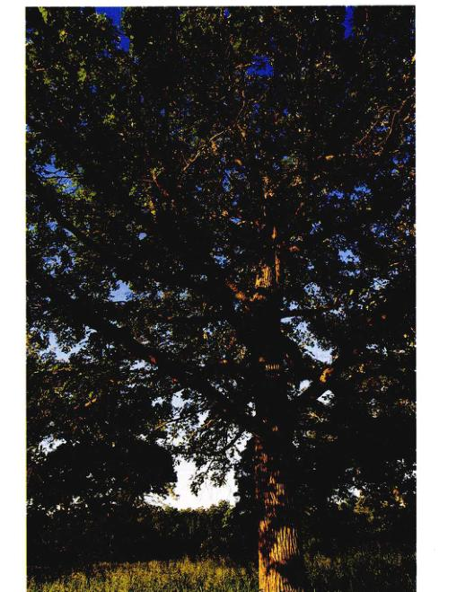
图 38.1 所有维管植物都有着共同的特征 维管植物比如图中的这株大树能长得如此高大，离不开精巧的机械支撑系统和液体运输系统。矮小一些的植物也有着类似的结构（虽然会简单一些）。植物的支持系统主要是位于地下的高度分叉的根系。
粗略地看来，虽然仙人掌、兰花和大树的共同之处并不明显，但大多数植物都有着基本的一致性（图 38.1）。这些一致性表现在许多方面。植物体是如何构成的；植物是如何生长、制造并运输营养的；它们的生长发育是如何调控的。本章主要阐释维管植物是如何“构建”的。我们将关注成熟植物体的多种多样的细胞、组织和器官。成熟植株的地上茎和地下根的结构明显不同，而这种结构差异实际上是胚发生时期所规划的基本植物体结构的最终产品，我们将在第40章中进一步阐述这一过程。
Page 2 / 原始页码 728
38.1 种子萌发后分生组织精心构建植物体
38.1.1 分生组织
种子萌发之后发育形成植物体取决于分生组织的活动。分生组织 (meristems) 由大量幼嫩的细胞组成，这些细胞的细胞质浓稠，细胞核大，其功能类似于动物的干细胞。也就是说，一个细胞分裂将产生两个细胞，其中的一个继续作为分生组织的细胞，另一个则自由分化形成其他的细胞，帮助构建植物体。通过这种方式，分生组织细胞不断地更新着。有关分生组织细胞与干细胞可能具有一些共同的基因表达途径的假说，得到了分子遗传学的有关证据的支持。
由于顶端分生组织 (apical meristem) 致使不断分裂产生新细胞，加上这些细胞随后的伸长生长，致使植物的根和茎伸长。在一些维管植物（包括灌木和大部分的乔木）中，侧生分生组织 (lateral meristem) 则使它们的直径逐渐变粗。
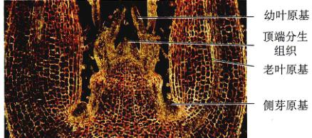
图 38.2 茎尖分生组织 对鞘蕊花 (Coleus) 的苗尖的纵剖展示了茎尖的结构。幼叶原基之间的部分就是顶端分生组织。
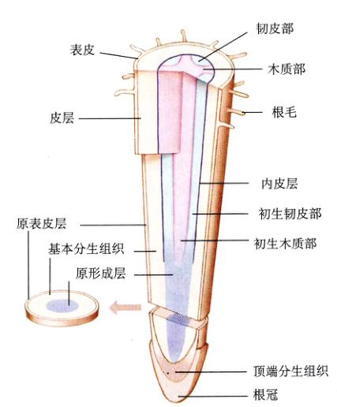
图 38.3 根尖分生区 这张根部分生组织图解显示了它们与根冠的关系。
1) 顶端分生组织
顶端分生组织位于茎的尖端（图 38.2）和根的尖端（图 38.3），紧随根冠之后。那些由初生生长所产生的植物组织叫做初生组织 (primary tissue)。在生长期里，顶端分生组织的细胞不断分裂，使幼苗尖端的细胞不断增多，从而使幼苗逐渐长长。植物体的初生生长是由顶端分生组织完成的。伸长的茎和根组成了主要由初生组织构成的初生植物体 (primary plant body)。初生植物体包括乔木和灌木的幼嫩的茎和根，以及一些草本植物的整个植株。
根尖和茎尖的分生组织细胞非常娇嫩，因此需要保护。根分生组织从产生开始，就受到了根冠 (root cap) 的保护。根冠细胞由根尖分生组织形成，在根穿过土壤的过程中，根冠细胞不断脱落并被更新。在种子萌发过程 (germination) 中，植物通过各种各样的机制保护着茎尖分生组织（图 38.4）。上胚轴 (epicotyl) 或下胚轴 (hypocotyl) 是生于子叶 (cotyledons) 之上或子叶之下的茎状组织，在幼苗出土的过程中可以弯曲，以最大限度地减少嫩枝尖端所受到的阻力。单子叶植物（一类进化较晚的被子植物）则常有胚芽鞘 (coleoptile) (保护组织) 在新生的茎周围形成一个保护管。在进一步的生长过程中，叶原基 (leaf primordia) 则包裹着特别容易干燥的茎尖分生组织。
顶端分生组织产生了3种类型的胚组织系统，即初生分生组织 (primary meristem)。在这些部分分化的组织逐渐发育成为植物体的初生组织的过程中，细胞不断地进行着分裂。这3种初生分生组织是：①原表皮层 (protoderm)——形成表皮 (epidermis)；②原形成层 (procambium)——形成初生维管组织 (primary vascular tissue)，包括初生木质部 (primary xylem) 和初生韧皮部 (primary phloem)；③基本分生组织 (ground meristem)——进一步分化成由薄壁组织细胞组成的基本组织 (ground tissue)。某些植物（如木贼和玉米）位于节间的居间分生组织 (intercalary meristem) 使节间部分进一步加长。在安静的夏夜，当你走过一片差不没多过膝盖的玉米地的时候，你或许能听到轻微的爆裂声。这声音就是由迅速生长的居间分生组织发出的。在很短一段时间的伸长量是令人非常震惊的。
Page 3 / 原始页码 729
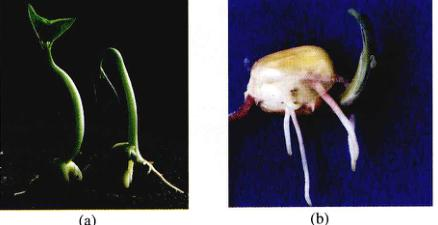
图 38.4 发育中的幼苗 在早期的发育中，顶端分生组织得到了特别的保护。(a) 这株大豆（双子叶植物）的植株在伸直以前，弯曲的上胚轴（子叶上方的茎）代替茎尖冲破土壤。(b) 玉米（单子叶植物）的茎尖被一层叫做胚芽鞘的管状组织包裹着，直到它露出地面见到太阳光。
2) 侧生分生组织
许多草本植物只进行初生生长，但有些草本植物也能进行次生生长 (secondary growth)。大多数的乔木、灌木以及一些草本植物具有活跃的侧生分生组织。这些组织位于根和茎外围，形成一个由分生组织组成的圆筒（图 38.5）。虽然次生生长也会使一些非木本植物加粗，但是，对于那些具有两种侧生分生组织的木本植物来说，次生生长的作用更加显著。在木质茎树皮内的木栓形成层 (cork cambium) 形成木栓细胞。在树皮内侧的维管形成层 (vascular cambium) 形成次生维管组织。维管形成层位于维管束 (vascular bundle) 的木质部与韧皮部之间，在维管形成层的相对两侧分别形成次生维管组织。次生木质部 (secondary xylem) 是木材的主要成分。次生韧皮部 (secondary phloem) 则非常靠近木质茎的外表面。剥去树皮将破坏韧皮部，并最终导致树木死亡。由侧生分生组织形成的组织构成了树干、枝条以及乔木和灌木的老根的主要部分，它们都是次生组织 (secondary tissue)，并统称为次生植物体 (secondary plant body)。
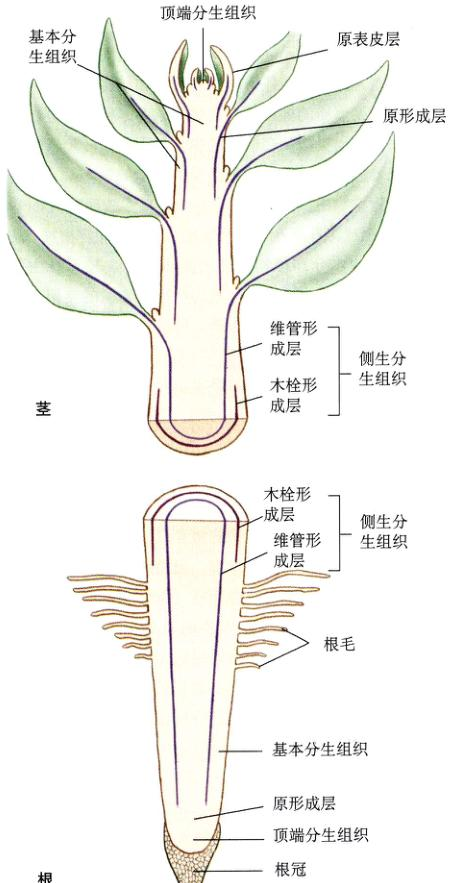
图 38.5 顶端分生组织和侧生分生组织 顶端分生组织实现初生生长，即根和茎的伸长。在一些植物中，侧生分生组织使植株加粗。这种生长叫做次生生长，因为这种分生组织并不是由顶端分生组织直接形成的。
分生组织是分裂活跃且对初生和次生生长都起作用的胚组织。
38.1.2 植物体的组成
初生分生组织和次生分生组织的协同生长形成了成熟的孢子体 (sporophyte)。植物体并没有一个固定的大小的各个部分。如叶、根、茎、花的数量和大小都随植物个体的不同而不同，有时甚至同种植物间也存在着差异。植物体各个部分的形态和结构的发育应该是受到相当严格的控制的，但是叶、茎、根的发育在某些方面却相当灵活。在植物的生长过程中，叶和根的数量、位置、大小甚至结构都会受到环境的影响。
Page 4 / 原始页码 730
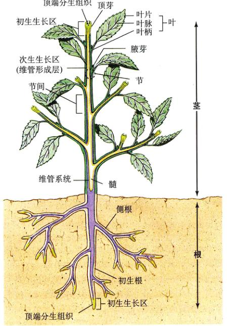
图 38.6 植物体图示 根和茎的分叉增加了顶端分生组织的数量。茎和根的明显加粗以及树皮的形成离不开维管形成层和木栓形成层（次生分生组织）的次生生长。灰绿部分是向长生长的活跃区，次生生长则发生在淡紫色的区域。
维管植物由根系统 (root system) 和枝系统 (shoot system) 组成（图 38.6）。根系统插入土壤，固定植株，从土壤中吸收水分和植物必需的无机离子。枝系统由茎 (stem) 和叶 (leaf) 组成。茎为叶提供着生的支架，叶则是进行光合作用的主要场所。叶的排列、大小以及其他的一些特点对于植物的营养物质的产生至关重要。花、其他的繁殖器官以及最终的果实和种子都在枝条 (shoot) 上形成（参见第40章及第42章）。组成植物营养枝的重复单元包括：节 (node)、节间 (internode)、叶 (leaf) 以及腋芽 (axillary bud)。腋芽是由初生分生组织形成的顶端分生组织，它使得植物形成分枝，或可以替换可能被草食动物嚼掉的主枝。植物的腋芽（此处于指叶芽，译者注）能够重新发育成枝条。当植物进入生殖生长的时候，腋芽则能够产生花或花枝 (floral shoot)。
植物有3种主要组织：基本组织 (ground tissue)、表皮组织 (dermal tissue) 和维管组织 (vascular tissue)。每种组织都具有不同的且与其功能相关的细胞类型。我们将在本章中对部分细胞类型进行讨论。那些仅有初生生长的植物的表皮系统 (dermal system) 由表皮 (epidermis) 组成。在大多数植物中，这一组织仅有一层细胞，并构成了植物体的外部保护层。幼嫩植株暴露在外部，其表皮上覆盖着一层由脂肪性的角质 (cutin) 组成的角质层 (cuticle)。有些植物如沙漠中的仙人掌，其角质层的外部可能还进一步地覆盖一层蜡。对于那些有次生生长的植物，由树皮形成的外部保护层也被视为皮组织系统 (dermal tissue system) 的一部分。
基本组织 (ground tissue) 主要由薄壁组织 (parenchyma) 细胞组成。薄壁组织细胞在最初一段时期内（很短）接近于球形，细胞有着充满活力的原生质，在形成之后它们相互推挤，变成别的形状，并且经常带有 11~17 条边。薄壁组织能够存活很多年，它们的功能包括储存养分、进行光合作用以及分泌作用等。
维管组织 (vascular tissue) 包括两类输导组织：①木质部 (xylem)：运输水分和溶解在水中的矿物质；②韧皮部 (phloem)：运输被植物作为食物的糖类（主要是蔗糖）。韧皮部也运输激素、氨基酸以及植物生长所必需的其他物质。木质部和韧皮部不仅功能不同，结构也不同。
根和枝条的分生组织形成了植物体。植物体的地下部分是高度分叉的根系统，而地上部分则是枝系统。枝系统由重复的基本单元组成，它们是：节、长在节上的叶、节间以及腋芽。
38.1.3 初生生长和次生生长
初生生长在建立有机体的基本轮廓的过程中发挥着重要作用，次生生长使有些植物加粗。这里我们将阐述形成层是如何形成高度分化的组织来支撑植物体的。在那些已灭绝了的最早期的维管植物中，由初生分生组织形成的维管组织和现存的这些植物中的维管组织一样，也起着运输的作用。然而，那时的植物体并没有根、茎、叶的分化。这3种器官的出现是大多数现代植物的特征，同时也反映了植物为适应陆生生活需要而日益增加的特化程度。
Page 5 / 原始页码 731
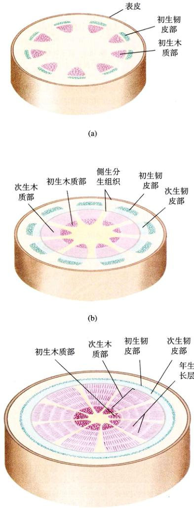
图 38.7 次生生长 (a) 在双子叶植物茎开始次生生长之前，初生组织伴随着顶端分生组织的初生生长而不断伸长。(b) 次生生长开始之后，侧生分生组织形成次生组织，茎干开始加粗。(c) 在此三年生的茎中，次生组织不断加宽，茎干变得粗大而木质化。注意，图中的侧生分生组织在根和茎中沿纵轴（从上至下）呈圆筒状排列。
随着次生生长的进化，维管植物得以形成粗大的树干而长成树状（图 38.7）。这种进化使植物在世代更迭中占据了优势，并使森林的形成以及植物在陆地上占统治地位成为可能。从化石记录来看，次生生长是从 3.8 万年前的泥盆纪 (Devonian period) 中期开始，从部分维管植物中独立地进化而来的。
在最早的植物中，有两种运输系统——这些系统后来则成了维管植物的一大特征。筛管分子 (sieve-tube member) 将糖类从它们合成和储存的地方运输出去，导管分子 (vessel member) 和管胞 (tracheid) 的细胞壁很厚，它们负责将水分和溶解在其中的矿物质从根部向上运输。这两种细胞都很长，并且连成一串形成一条管道。筛管分子是韧皮部组织的特征，导管分子及管胞是木质部组织的特征。在初生生长过程中形成的初生组织中，这两类细胞彼此联系位于同一个维管束中。在次生生长中，皮部位于根或茎的外缘，而一个很粗的木质部的核心则更靠近中央部位生长。你将会发现很多维管植物的根和枝条有着各种不同的维管组织排列方式以及次生生长的模式。请注意，在红杉中，水和养分要从根尖一直运输到离根最远的枝条的顶端。为了完成这一任务，这些组织在根和枝条之间的过渡区连接在了一起。随后我们将详细说明存在于所有植物体（不论它是含有次生生长）中的这3类组织系统。
植物通过分生组织的分裂而生长。初生生长源于植物尖端的顶端分生组织细胞的分裂，这种作用使得枝条伸长。次生生长源于圆筒状环绕着枝条的侧生分生组织细胞的分裂，这一作用使得枝条加粗。
38.2 植物有3种基本的组织，每种组织由几种类型的细胞组成
38.2.1 表皮组织
表皮细胞 (epidermal cell) 由原表皮层 (protoderm) 形成，覆盖着初生植物体的每个部分。这很可能是胚形成过程中最早出现的组织系统。暴露在外的细胞壁上覆盖有一层角质层 (cuticle)，其厚度随着物种的不同以及环境状况的改变而改变。表皮组织中有大量特化的细胞，包括保卫细胞 (guard cell)、毛状体 (trichome) 和根毛 (root hair)。
Page 6 / 原始页码 732
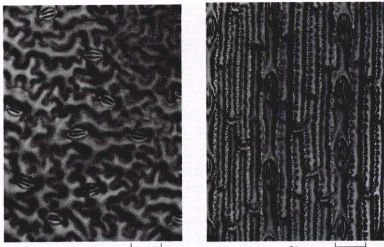
图 38.8 双子叶植物和单子叶植物的表皮 (400×) 气孔在双子叶植物与单子叶植物的表皮上均均匀地分布着，但是其排列方式却非常不同。(a) 豌豆（双子叶植物）叶中的气孔是随机分布的。(b) 玉米（单子叶植物）叶中的气孔是均匀地按行分布着。这些照片同时也展示了不同形状的植物细胞。有些细胞像个盒子，如玉米 (b) 中的一些细胞，而另一些则很不规则，如豌豆 (a) 中的细胞。
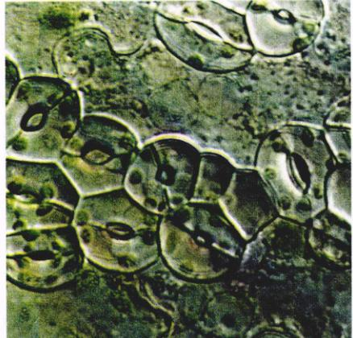
图 38.9 气孔过多的突变体 拟南芥的突变缺一少种控制保卫细胞分布的必不可少的信号。
(1) 保卫细胞：是一对香肠状或哑铃状的细胞，位于气孔 (stoma) 的侧面。气孔则是表皮上一个口状的开口。与其他表皮细胞不同，保卫细胞含有叶绿体。气孔通常出现在叶的表皮组织中（图 38.8），有时也出现在植物体的其他部分，如茎和果实中。氧气和二氧化碳的进出，水分的蒸发几乎全部通过气孔完成。每平方厘米的叶表皮上的气孔数从 1000~1 000 000 个以上不等。多数植物叶片的下表皮上的气孔数多于上表皮，这样有利于减少水分的散失。部分植物仅下表皮上有气孔，而少数植物，如睡莲的气孔则仅出现在上表皮（图 38.9）。
保卫细胞的形成是非对称的细胞分裂的结果。这一非对称的分裂形式所导致的气孔分布方式吸引了不少发育生物学家的注意。通过研究那些气孔分布“失控”的突变株，人们了解到有关气孔开始形成的时机以及引发保卫细胞形成细胞间的信号传递的信息。比如说，那种气孔孔过多的突变体（图 38.9），可能是由于正在形成的气孔没能抑制邻近的细胞形成新的气孔造成的。
气孔的开闭是对外界因素如阳光、温度以及水分状况的反应。在光合作用活跃阶段，气孔张开，允许二氧化碳自由地进入，同时让氧气自由地排出。我们将在第39章中讨论调节这些活动的机制。
(2) 毛状体 (trichome)：是表皮上毛发状的突出物（图 38.10）。它们常常出现在茎、叶以及生殖器官表面。一片毛茸茸的叶常常被毛状体覆盖着，在低倍显微镜下即可清楚地看见。毛状体在体表的凉爽以及减少蒸发速率方面起着重要作用。毛状体随着植物种类的不同而变化很大：有些仅由一个细胞组成，而另一些可能由几个细胞组成。有些毛状体含有腺体，常常分泌出粘性物质或毒素以防范食草动物。
科学家曾对拟南芥 (Arabidopsis) 的毛状体的发育已进行了深入研究，最终发现，决定一个毛状体的发生位置并产生这个毛状体一共需要4个基因（图 38.11）。毛状体的进一步生长则需要8个基因。这些基因中的任何一个一旦丧失了功能，都将造成毛状体根部的毛发生扭曲。这是选取一个简单的系统并尝试从遗传学角度进一步剖析各个组成部分的一个例子。了解植物体更复杂部分的形成机制是科学家们面临的一个重大挑战。
Page 7 / 原始页码 733
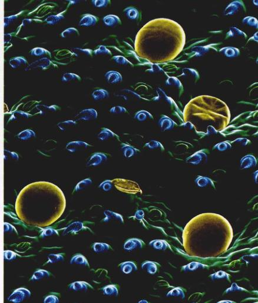
图 38.10 毛状体 图中蓝色的泪珠状的结构就是一层由毛状体构成的保护层，它使得叶表面的空气更加湿润，帮助植物保存可利用的水源。
(3) 根毛 (root hair) 是单个表皮细胞的管状伸长，它们出现在正在生长的幼根根尖后端的区域（图 38.3）。因为根毛仅仅是表皮细胞的伸长部分而非一个独立的细胞，因此它与表皮细胞之间没有隔膜。根毛使根与周围的土壤颗粒保持着紧密的接触，并大大增加了根的表面积，由此提高了根的吸收效率。随着根的生长，根毛区的范围大致保持恒定，老的根毛脱落了，而另一端又会长出新的根毛。水和矿物质的吸收主要是通过根毛进行的，在草本植物中尤其如此。要注意区分根毛和侧根。侧根是多细胞的，发源于根的深处。
在次生生长中，木栓形成层（曾在本章有关茎的部分中讨论过）形成树干和根的表皮。它产的细胞将替换由于根和茎的加粗而细紧并破裂的表皮。与其他细胞相比，表皮细胞通常缺少可塑性，但在有些情况下，它们可以和其他一些器官的表皮细胞融合而去分化。
有些表皮细胞特化以实现保护的功能，另外一些则特化实现吸收的功能。在表皮组织内，这些特化的细胞间隔分布，最大限度地实现了它们的功能，但却是一个令人着迷的发育难题。
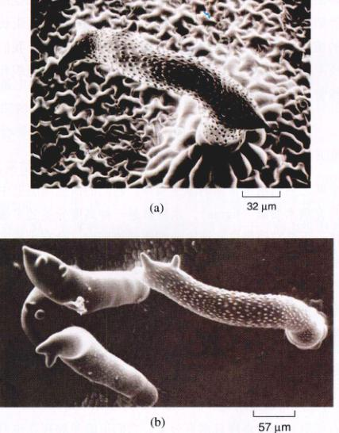
图 38.11 毛状体的变异 突变株揭示了与调节毛状体的分布与发育的信号传导途径有关的基因。这些变异包括：(a) 扭曲型1 (DISTORTED1)；(b) 扭曲型2 (DISTORTED2)，在这些变异体中，毛状体肿胀而卷曲。
38.2.2 基本组织
1) 薄壁组织
薄壁组织 (parenchyma) 细胞是最常见的一种植物细胞，它们有很大的液泡，细胞壁薄，成熟后平均有 14 条边。它们是初生组织中最丰富的细胞，偶尔也会出现在次生组织中（图 38.12a）。大多数的薄壁组织只有一层初生细胞壁，这层细胞壁在薄壁细胞尚未成熟时就已经形成了。尽管许多种薄壁细胞具有特殊的功能，如分泌花蜜和树脂，储存乳液、蛋白质以及代谢废物，但是与其他细胞相比，薄壁细胞的特化程度较低。
薄壁细胞通常也储存食物和水，它们的细胞核可以分裂，成熟之后也依然是活细胞。在有些植物（如仙人掌）中，它们甚至可以存活 100 年以上。有些水果（如苹果）中的大部分细胞都是薄壁细胞。有些薄壁细胞，尤其是那些位于叶片中央以及草本植物茎的外围部分的细胞，常含有叶绿体。这些可以进行光合作用的薄壁组织称为绿色组织 (chlorenchyma)。
Page 8 / 原始页码 734

图 38.12 3类基本组织 (a) 薄壁组织细胞 薄壁组织细胞的横切面能看到原生细胞壁。(b) 厚角组织细胞 在接骨木 (Sambucus) 幼枝的厚壁组织细胞的横切面中，可以看到加厚的细胞壁。(c) 石细胞 梨的果肉中的成团的石细胞（在制片时被染成红色）。包围着石细胞的那些被染成浅蓝色的细胞是薄壁组织细胞。这些成团的石细胞形成了梨肉里的“砂粒”。
2) 厚角组织
和薄壁组织细胞一样，厚角组织 (collenchyma) 细胞也有活的原生质体，也可以存活很多年。这些细胞的长通常稍大于宽，细胞壁的厚度不一（图 38.12b）。厚角组织细胞起着支撑植物器官的作用，其柔韧性很好，即使弯曲也不会破裂。它们常成束或圆柱形排列在茎或叶柄的表皮下，并沿着叶脉排列。在那些没有次生生长的植物的茎中，这些支持力都源于厚角组织。我们所吃的芹菜（叶柄）中的“筋”，就是主要由厚角组织和维管束（运输组织）组成的。
3) 厚壁组织
厚壁组织 (sclerenchyma) 细胞的细胞壁厚而结实，成熟之后通常不含活的原生质体。它们的次生细胞壁中常充满木质素 (lignin)。木质素是一种高分子的多聚体，正是它使得这些细胞的细胞壁更坚固。含有木质素的细胞壁是木质化 (lignified) 的。木质素普遍存在于那些起着支撑作用或者有着机械功能的植物细胞的细胞壁中。有些种类细胞的初生细胞壁和次生细胞壁中都含有木质素。
厚壁组织分为两类：纤维 (fiber) 和 石细胞 (sclereid)。纤维是一些细长的细胞，这些细胞常聚集成线束。亚麻布就是由亚麻韧皮部中的厚壁组织纤维织成的。石细胞的形状多样且常有分叉，它们可能单独存在也可聚在一起。石细胞不能伸长，但却有很多形状，包括星形。梨中的砂质颗粒就是由聚在一起的石细胞形成的，这些石细胞遍布梨的柔软果肉中（图 38.12c）。这两类坚硬而有厚壁的细胞为它们所在的组织增加了强度。
薄壁组织细胞功能多样，是最常见的一类植物细胞。厚角组织细胞为幼嫩的茎和叶起了许多支持作用。厚壁组织细胞增加了植物组织的强度，在成熟之后可能变成死细胞。
38.2.3 维管组织
1) 木质部
木质部是植物最主要的运输水分的组织，通常由导管 (vessel) 的联合体组成。导管由相互串连的导管分子 (vessel member) 和管胞 (tracheid) 组成。导管分子是中空的长管状的紧密排列的死细胞，管胞也是死细胞，两端斜尖，以相互偏斜的末端连接（图 38.13）。在有些植物中（不包括被子植物），管胞是惟一的运输水分的细胞，水流不间断地经过木质部，从根向土流入茎，最终到达叶。当水分到达叶时，大部分的水分在薄壁组织细胞外形成一层水膜，并逐渐以水蒸气的形式在细胞间的空隙中扩散，最终散失到附近的空气中（主要通过气孔）。水蒸气从植物中扩散出来的现象叫做蒸腾作用 (transpiration)。除了运输水分和溶解在水中的矿物质及无机离子（如硝酸根离子和磷酸根离子）外，木质部还为植物体提供了机械支持。
初生木质部 (primary xylem) 由顶端分生组织形成的原形成层分化产生。次生木质部则是由木质部产生的一种侧生分生组织——维管形成层形成的。木材就是由不断积累的次生木质部构成的。
几乎只有被子植物中有导管分子。在原始的被子植物中，导管分子往往类似纤维，相对较长。在进化程度更高的一些被子植物中，导管分子则较短粗，很像去掉底和顶的微型咖啡罐。导管分子和管胞都有很厚的木质化的次生细胞壁，成熟之后都不含有活性的原生质体 (protoplast)。在原生质体尚未死亡之前，细胞分泌出木质素用以加固由纤维素构成的细胞壁，结果在原生质体死亡之后只剩下细胞壁。水流通过管胞在植物体内流动时，会经过纹孔 (pit)，纹孔很多时候是圆形或椭圆形的小区域，纹孔上没有次生壁物质沉积。两个管胞的纹孔对应，则两两相对。与此不同的是，导管分子没有类似的结构，它们一个一个首尾相连，几乎完全畅通，在两端开口处仅有一些由细胞壁物质组成的条带或横隔。
Page 9 / 原始页码 735
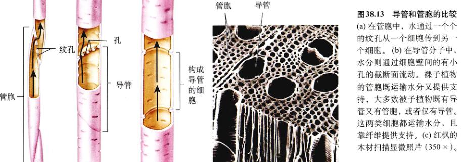
图 38.13 导管和管胞的比较 (a) 在管胞中，水通过一个的纹孔从一个细胞传到另一个细胞。(b) 在导管分子中，水分则通过细胞壁间的小孔的截断面流过。裸子植物的管胞既运输水分又提供支持，大多数被子植物既有导管又有管胞，或者仅有导管。这两类细胞都运输水分，且纤维作提供支持。(c) 红枫的木材扫描显微照片 (350×)。
导管比彼此相互重叠的管胞有更高的输水效率。我们之所以这样认为，一方面是因为在部分植物类群中，导管由管胞单独进化而来，这意味着导管在自然选择中占据了优势。另一方面，有些类型的纤维也可能是由管胞进化并特化的，用以提供支持作用而不是输导作用。有些古老的开花植物仅有管胞，但实际上所有的现代被子植物都有导管。那些木质部的分化受到抑制而管胞形成未受影响的突变植株，由于无法有效地运输水分，在萌发后迅速地枯死。
除了起运输作用的细胞外，典型的木质部还含有纤维和薄壁组织细胞（基本组织细胞）。薄壁细胞通常由维管形成层中特殊的射线原始细胞 (ray initial) 产生，它们在植物体内呈水平分布，并特称作射线 (ray)，起横向运输和储存食物的作用。射线原始细胞实际上是分生组织细胞的另一种术语，它分裂产生两个细胞，一个是射线原始细胞，另一个则分化成射线细胞（木射线和韧皮射线）。在木质的根和茎的横切面上，可以看到射线由木质部的中央放射状地发出，就像轮辐一样。有些木材中纤维很丰富，如橡木 (Quercus)，这些木材相应就更致密。根据木质部中这些细胞和其他类型细胞的排列方式，人们就可识别出大多数的植物属，有些甚至能辨认到种。这些纤维是现代纸的主要成分，而古代的纸是用韧皮部的纤维制造的。
2) 韧皮部
韧皮部 (phloem) 位于茎和根的外围，是维管植物最主要的运输营养的组织，如果一株植物的树皮被环剥，即消除树干维管形成层以外的一圈真正的树皮，这株植物将因根部得不到营养物质而死去。
营养物质在韧皮部中的运输，是由两类长形的细胞实现的：筛胞 (sieve cell) 和筛管分子 (sieve-tube member)（图 38.14）。无种子维管植物和裸子植物仅有筛胞；大多数的被子植物都有筛管分子。两类细胞都有成簇的小孔叫做筛域 (sieve area)。在细胞相互重叠的端部，筛域更多，它们将相邻的筛胞和筛管分子的原生质连接起来。这两类细胞都是活细胞，但大多数的筛管分子和所有的筛胞成熟之后都没有细胞核。
在筛管分子中，一些筛域有较大的孔而称作筛板 (sieve plate)。筛管分子彼此首尾相连，形成纵向的筛管 (sieve tube)。筛胞的分化程度不及筛管分子，其筛域孔径大致相同。与筛胞相比，筛管分子更先进，特化程度更高，可能运输效率也更高。
筛管分子与邻近的一种特化的薄壁组织细胞即伴胞 (companion cell) 相连。很明显，伴胞执行一些代谢功能，来维持与之相连的筛管分子的生命活动。在被子植物中，一个共同的射线原始细胞不对称地分裂，形成一个筛管分子及伴胞。伴胞具备普通薄壁组织细胞的一切组成成分，包括细胞核和大量的胞间连丝 (plasmodesmata)（两个相邻细胞胞质之间的连接）。胞间连丝将伴胞的细胞质与相连的筛管分子连接起来。隐花植物 (nonflowering plant) 的筛胞与伴胞功能类似的蛋白质细胞 (albuminous cell)。韧皮部中的纤维和薄壁细胞通常都很丰富。
木质部将水分和溶于其中的矿物质从根部运输到茎和叶，韧皮部将有机物从植物的一个部分运输到植物的另一个部分。
Page 10 / 原始页码 736
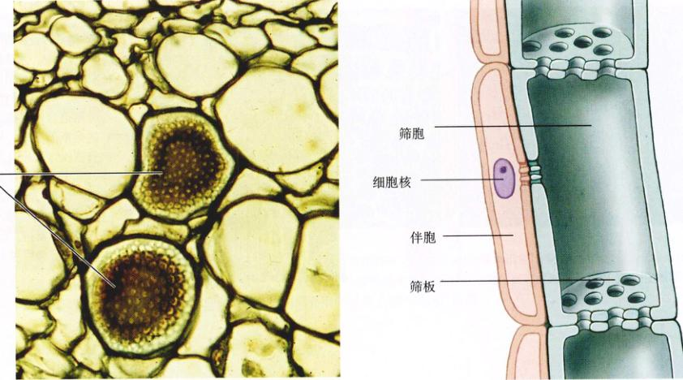
图 38.14 筛管分子 (a) 从南瓜韧皮部的横切面上可以看到筛板中运输蔗糖和激素的孔道。(b) 筛管分子相互叠加并通过筛板连接。筛板左边那个狭窄的有核细胞就是伴胞。这个细胞为仅有细胞膜而无细胞核的筛管提供养分。
38.3 植物根部的细胞在远离不断分裂的根尖分生组织的过程中不断分化
38.3.1 根的结构
植物的3类营养器官——根、茎和叶中存在着3类组织系统。与茎相比，根的组织模式及发育过程都更加简单，因此，我们将先考察根的有关内容。发育中的根通常有4个区域：根冠 (root cap)、分生区 (zone of cell division)、伸长区 (zone of elongation) 和成熟区 (zone of maturation)（图 38.15）。其中有3个区的界限并不明显。当顶端的初生分生组织细胞分裂时，那些在根尖顶端的子细胞分化成为根冠细胞。朝相反方向分裂的细胞在完成分化之前贯穿另外3个区域。当你在考察根尖的不同区时，想象一下根尖穿过土壤向下生长的情形。这样你对根的认识才不会局限于图表和照片所显示的静止的形象。
1) 根冠
茎中没有与根冠相对应的结构。根冠由两类细胞组成：内部的柱细胞 (columella cell) 和外侧的根冠细胞 (lateral root cap cell)。根尖分生组织不断产生新的细胞，以补充外侧根冠细胞。在有较粗壮的主根的植物中，根冠非常明显。根冠最显著的功能就是在根生长的过程中，保护娇嫩的根尖组织免受土壤中坚硬成分的磨损。外侧根冠细胞的寿命大多不超过一周，新生或的细胞由内向外替换老细胞，它们形成了一个黏液层，使得根能更轻易地穿过土壤。这层黏性物质还为一些植物（如豆科植物）根部常见的固氮菌的生长提供了一个良好的环境。
当现有的根冠被人为剥去或因意外脱落时，就会产生新的根冠。根冠还具有感知重力的功能。高度特化的柱细胞的内质网位于外周，细胞核则处于细胞中央或处于细胞顶端。它们没有大液泡。柱细胞内含有大量的造粉体 (amyloplast)，即充满了淀粉粒的质体。这些颗粒聚集在细胞朝向重力的一侧。当一株盆栽植物被侧向放倒的时候，这些造粉体就会移至离重力源最近的地方，根也会弯向那个方向。在这个实验中，科学家利用激光杀死拟南芥 (Arabidopsis) 根中的柱细胞。实验表明，仅有两个柱细胞就足以感受重力。这种对重力反应的确切机制尚不十分清楚，但有证据表明，造粉体中的钙离子能够影响细胞中生长激素的分布（在此例中为生长素）。此种机制应该是一个复合信号传导机制，因为在没有生长素存在的情况下根依然发生了弯曲。最近提出的一种假说认为：柱细胞向伸长区（离分生区最近的一个区域）的细胞发出了一个电信号，从而引起了根的弯曲。
Page 11 / 原始页码 737
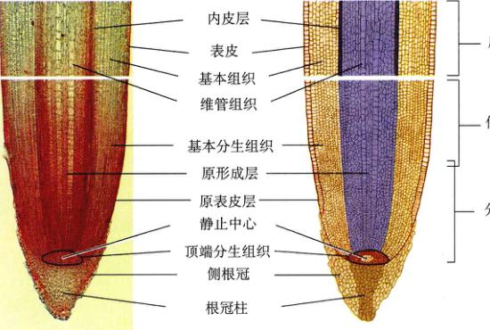
图 38.15 根的结构 玉米根尖。根尖的纵切面显示出根冠、顶端分生组织、原形成层、原表皮、表皮以及基本组织。
2) 分生区
顶端分生组织像一个倒置的内凹的细胞圆顶，位于根尖的中央，被根冠保护着。分生区的大多数活动都发生在圆顶的边缘，那里的细胞每隔 12~36 小时分裂一次，通常有周期性，在一天内有 1~2 次达到峰值。大多数的细胞都接近立方形，液泡较小，细胞核位于细胞中心，占据了细胞的大部分空间。这些迅速分裂的细胞是由顶端分生组织分裂产生的。静止中心 (quiescent center) 是位于根尖分生区中央的一团细胞。它们很少分裂。为了更好地理解，可以设想一下一个实心球膨胀时的情形，外表面增大的速度必然远快于中心增大的速度。
顶端分生组织产生的子细胞很快就进一步分裂产生前面提及的3种初生组织：原表皮层、原形成层以及基本分生组织。通过研究较简单的拟南芥属植物的根，人们已经确定了调控这些组织系统形成的基因。这些细胞的分化开始于分生区，但直到这些细胞达到成熟区的时候，解剖学和形态学的特征才完全显现出来。例如，*WEREWOLF* 基因对于确定根的两种类型的表皮细胞（有根毛和无根毛）（图 38.16a）是必需的，而另一种 *SCARECROW* 基因则在基本组织的细胞的分化（图 38.16b）过程中发挥了重要的作用。它对于一个细胞通过不对称分裂，产生两个柱状细胞是必不可少的。外层细胞分化形成基本组织，承担储存功能；内层细胞则形成内皮层 (endodermis)，起着调控细胞间的水流及其中的溶质进出根的维管柱的功能。这一区域内细胞的发育取决于它们所处的位置。如果由于某种错误或由于另一个细胞的脱落而改变了某个细胞的位置，这个细胞将按照它的新位置所决定的发育方式发育下去。
3) 伸长区
在伸长区 (zone of elongation)，由于初生分生组织产生的细胞的径向长度比横向长度多出好几倍而使根变长，同时这些细胞的宽度也有稍增加。细胞中开始出现小的液泡，这些液泡逐渐长大，直到占据了细胞 90% 或以上的体积。伸长区以上区域内的细胞的大小没有进一步地增长，而根的成熟部分的细胞除了周长增长外，在植物的一生中都保持稳定不变。
Page 12 / 原始页码 738
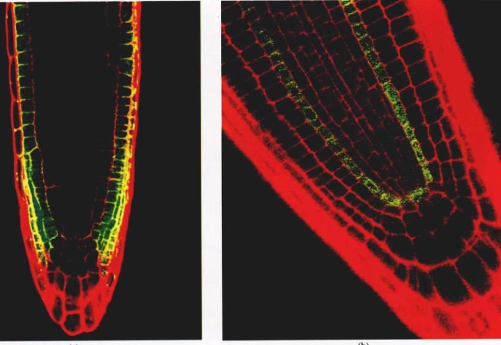
图 38.16 组织特异性基因的表达 (a) 表皮特异性基因的表达。将拟南芥 (Arabidopsis) 中 *WEREWOLF* 基因的启动子与一种绿色荧光蛋白相连，并培育出该转基因植物。绿色荧光显示表达此基因的表皮细胞，红色用于表示细胞的边界。(b) 基本组织特异性基因的表达。细胞胞的非对称分裂需要 *SCARECROW* 基因，这种分裂方式形成了并排的基本组织细胞和内皮层细胞。故此，在野生株中形成了两层细胞，而突变株中由于没有不对称分裂而仅有一层细胞（绿色）。
4) 成熟区
在伸长区伸长了的那些细胞在成熟区 (zone of maturation) 分化成为各种类型的细胞。根表面的柱状细胞发育成有一层薄薄的角质层的表皮细胞。很多表皮细胞各自突起形成一根根毛 (root hair)，这个突起与表皮细胞之间无隔膜隔开，因此细胞核可以进入到根毛中。根表面每平方厘米的区域内的根毛可以多达 35 000 根，这大大增加了根的表面积，并大大提高了根的吸收能力。根毛通常仅能存活几天。随着它们逐渐进入成熟区，老的根毛脱落，新的根毛又从靠近伸长区的一端长出来。与豆科植物共生的固氮菌将大气中的氮转化为可供豆科植物利用的形式，而这些细菌正是通过根毛进入植物体内，并刺激植物产生一个包裹它的根瘤。
由基本分生组织产生的薄壁组织细胞紧贴着表皮内侧。这一组织称作皮层 (cortex)，可能有多层细胞，起着储存养分的作用。皮层最内一层细胞称为内皮层 (endodermis)（图 38.17）。内皮层细胞的初生壁充满不透水的脂性物质——木栓质 (suberin)。木栓质形成叫做凯氏带 (Casparian strip) 的环带。凯氏带环绕着内皮层细胞两侧的径向壁和上下横向壁（图 38.18），阻断了细胞间的物质运输。只有平行于根表面的内皮层细胞的另外 2 个面，才是物质进入根中央的惟一通道，其细胞膜控制着物质的进出。
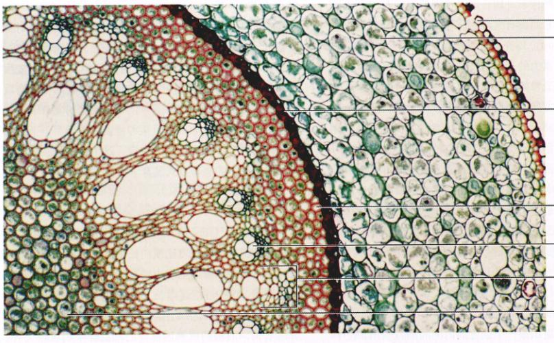
图 38.17 单子叶植物根的成熟区横切面 (100×) 单子叶植物——百合科的菝葜 (Smilax)。
内皮层以内的所有组织统称为中柱 (stele)。紧贴内皮层的是一圈薄壁组织细胞，它们组织成了中柱鞘 (pericycle)。中柱鞘细胞即使在成熟之后仍可以分裂。它们可以形成侧根 (lateral root)，在双子叶植物中也可以形成维管形成层的一部分。
Page 13 / 原始页码 739
在幼嫩的双子叶植物根的中央，初生木质部中的运输水分的细胞发生分化，从而形成一个实质的中心。在一株双子叶植物根的横切面上，初生木质部形成的中央通常呈星状。有一两条或多条朝向中柱鞘的辐射状的“臂”（图 38.19）。在单子叶植物以及少部分双子叶植物的根中，初生木质部位于分散的呈环状排列的维管束中。根的正中央为薄壁组织细胞组成的髓 (pith)，维管束 (vascular bundle) 环绕着髓排列。初生韧皮部 (primary phloem) 具有运输营养物质的功能，在双子叶植物和单子叶植物中，这些细胞都是分散在木质部“臂”间的细胞群分化而来的。
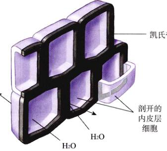
图 38.18 凯氏带 凯氏带是一条防水带，它迫使水和溶于其中的矿物质只能穿过细胞膜，而不是通过细胞壁之间的间隙。
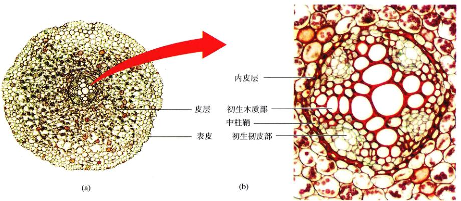
图 38.19 双子叶植物幼根的成熟区横切 (a) 双子叶植物毛茛 (Ranunculus) (40×)；(b) 放大后各种组织的分布 (600×)。
Page 14 / 原始页码 740
在双子叶植物及其他具有次生生长 (secondary growth) 的植物中，中柱鞘的一部分以及切皮部与木质部“脊”之间的薄壁组织细胞形成了根的维管形成层；维管形成层开始向内产生次生木质部 (secondary xylem)，向外产生次生韧皮部 (secondary phloem)（图 38.20）。最后，次生组织形成一个同心圆筒。在这个次生组织产生的过程中，初生韧皮部、皮层以及表皮逐渐变形破裂并脱落。木本植物的中柱鞘进行平周分裂，外层的细胞转化为木栓形成层，木栓形成层进一步形成了周皮，我们将有关部切分讨论这一问题（图 38.26）。在双子叶植物的次生生长中，中柱以外的一切组织都将丢失并被树皮所代替。
根的顶端分生组织在根尖形成根冠，在另一端形成根的组织。新产生的细胞在远离根冠和分生组织的过程中逐渐成熟。初生根在成熟的过程中形成了运输系统、外部的屏障以及分支的根系。
38.3.2 变态根
植物的根系可以分为直根系 (taproot system) 和须根系 (fibrous root system) 两种。直根系具有一条粗壮的主根以及一些细小的分支；须根系则由大量的直径相近的须根组成。但是，有些植物的根除了具有固定和吸收的作用外，还具有别的功能，这些根就是变态根。
(1) 气生根 (aerial root)：有些植物如附生的兰科 (orchids) 植物，附生于树枝的枝条上，除寄主外与地面没有任何其他方式的接触。其根伸展在空气中。有些气生根的表皮由好几层细胞组成，适宜于减少水分的散失。有些气生根也可能是绿色的，并可以进行光合作用，如香草的气生根。一些单子叶植物（如玉米）从茎的基部长出粗壮的根，这些支柱根 (prop root) 扎进土地，使植物能够抵御大风的袭击。攀缘植物（如常春藤）也从茎上产生根，这些根固定于砖墙的缝隙或是树干上。那些不是由根产生而是由茎或植物的其他部分产生的根叫做不定根 (adventitious root)。对于常春藤来说，不定根的形成取决于枝条所处的发育阶段，枝条进入成熟期以后就失去了产生不定根的能力。
(2) 出水通气根 (pneumatophore)：生长在沼泽或其他一些潮湿地方的植物可能会从被水淹没的根上长出海绵状的出水通气根（图 38.21a）。这些根通常高出水面好几厘米，便于为水下的根提供氧气。
(3) 收缩根 (contractile root)：百合及其他几种植物（如蒲公英属的植物）的球茎上的螺旋状的根具有收缩功能，在它们的拖动下，植物每年都向更深的土层前进一些，直到抵达一个温度相对稳定的区域。由于细胞的加厚和压缩，收缩根像螺丝锥的螺纹一样盘旋，甚至可以缩短到原长的 1/3。
(4) 寄生根 (parasitic root)：有些植物如菟丝子 (Cuscuta) 的茎缺乏叶绿素，具有螺钉样的吸器 (haustoria)。吸器伸入所缠绕的宿主植物中，与宿主植物的输导组织相通，从而有效地寄生在宿主上。
(5) 储藏根 (food storage root)：红薯以及其他一些类似植物的侧根的木质部中，产生了许多额外的薄壁组织细胞。这些薄壁细胞中储存了大量的碳水化合物。在胡萝卜、甜菜、欧洲萝卜、红萝卜以及大头菜中，根茎的结合体同样具有储存营养的功能。从这类根的横切面上可以看到由次生生长形成的多重圆环。
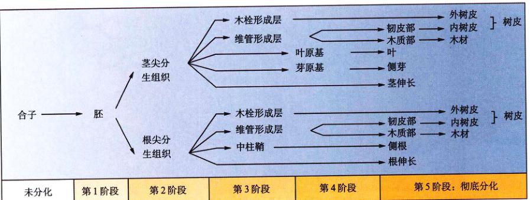
图 38.20 植物组织分化的各个阶段
Page 15 / 原始页码 741
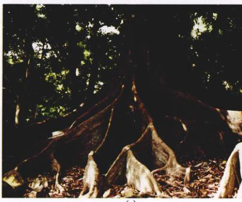
图 38.21 三类变态根 (a) 出水通气根（前景）是海绵状的突起，它们是从水下的根上长出来的。(b) 重达 25 kg (60 磅) 的储水根。(c) 热带榕树的板根。
(6) 储水根 (water storage root)：一些仙人掌科 (Cucurbitaceae) 植物，尤其是那些生长在干旱地区的仙人掌，长有储水根（图 38.21b），有的储水根甚至重达 50 kg 以上。
(7) 板根 (buttress root)：榕科的一些植物及其他热带植物，从树干的基部长出了巨大的支柱根，这些根使得树木异常地稳固（图 38.21c）。
有些植物具有变态根，这些变态根能够进行光合作用，采集氧气，能够寄生在其他植物体上，储存营养和水分，也具有支撑茎的作用。
38.4 茎是植物枝条的骨架，起着运输营养物质和支撑植物地上器官的作用
38.4.1 茎的结构
1) 外型
茎的组织最先是由茎尖分生组织开始形成，并且间歇地形成一些突起，即原基 (primordia)，这些突起最终将形成叶和其他枝条甚至花（图 38.22）。茎是植物器官着生的中轴。叶在茎上的排列方式也有很多样，它们可能呈螺旋状，也可能两两对生，也可能三片或多片叶轮生，排列成环状。其中以螺旋状排布最为常见，其原因尚不得而知。在这种排布中，每个叶片大约旋转 137.5°。这个角度恰好符合黄金分割。黄金分割是数学中的一种比例关系，在自然界中随处可见（如一些海螺壳上的螺纹）。在经典建筑如帕德农神庙 (the Parthenon wall dimensions) 的墙壁，甚至现代艺术如 Mondrian 的画中也有黄金分割的例子。叶排布的方式叫叶序 (phyllotaxy)，其目的可能是为了使叶得到最多的阳光。
Page 16 / 原始页码 742
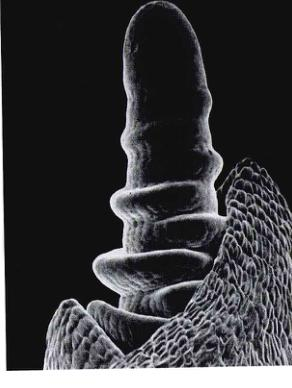
图 38.22 茎尖 小麦茎尖分生组织的扫描电镜照片 (200×)。
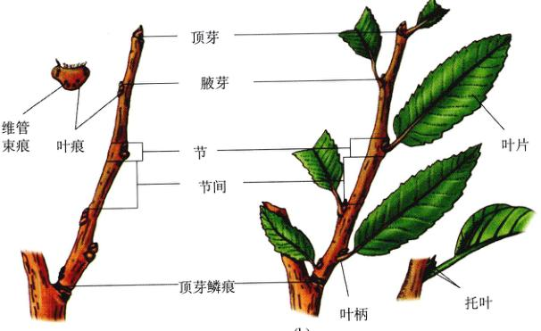
图 38.23 木质的小树枝 (a) 冬枝；(b) 夏枝。
茎上着生叶的部位或区域叫做节 (node)，相邻两个节之间的部分叫做节间 (internode)。叶通常有扁平的叶片 (blade)，有时还有叶柄 (petiole)。没有叶柄的叶叫无柄叶 (sessile)。注意，当 "sessile" 这个词用于动物时有着不同的含义（很显然，植物不会站起来四处走动）。用手植物时，这个词意味着附着在茎上。叶柄（或叶片）与茎之间的部分叫做叶腋 (axil)。生于叶腋处的芽称为腋芽 (axillary bud)。芽是初生枝条的顶端分生组织的产物，顶端分生组织与叶原基统称为顶芽 (terminal bud)。腋芽常发育成形成枝条，或者形成将发育成花的分生组织（请回顾图 38.6 中的这些术语）。
单子叶植物和草本双子叶植物的茎都没有木栓形成层。由于表皮层的外层细胞中有叶绿体，茎通常呈绿色，并且可以进行光合作用。草本植物的茎上常有气孔，有时还会有多种类型的毛状体。
木质茎可以存活很多年，除了形成了最初的器官外，还产生了一些显著的标志。在生长季节，顶芽的活动使枝条增长。有些植物（如天竺葵）的芽是裸露的，但大多数木本植物的芽都有过冬时起保护作用的芽鳞 (bud scale)。当芽伸展时，芽鳞脱落，留下细小的芽鳞痕 (bud scale scar)。一些小树枝上的疤痕的起源却不相同。有些叶的基部有一对像蝴蝶状的托叶 (stipule)（叶的一部分），托叶脱落后就形成托叶痕 (stipule scar)。秋天，当落叶树的叶子脱落时，留下带有维管束痕 (bundle scar) 的叶痕 (leaf scar)，这些疤痕显示出曾经存在的维管连接。在冬季，叶痕的形状、大小以及一些其他的特征足以帮助我们区分不同的植物（图 38.23）。
2) 内部结构
与根一样，在每个茎的茎尖都有顶端分生组织。顶端分生组织产生初生分生组织，使茎伸长。顶端分生组织形成3类初生分生组织。原表皮层形成表皮，基本分生组织形成薄壁组织细胞。位于茎中央的薄壁组织细胞形成髓，位于外围的薄壁组织细胞形成皮层。由原形成层形成的圆筒状的初生木质部和初生韧皮部被基本组织所包围。
从韧皮部与木质部所形成的中央维管柱中分出一束韧皮部和木质部，进入发育着的、叶或枝条中，这就是迹 (trace)。在中央维管柱的输导组织上的缺口叫做隙。双子叶植物中，维管形成层 (vascular cambium) 在初生木质部与初生韧皮部之间形成（图 38.24）。维管形成层把环状的初生维管束连接起来，在很多情况下，这只是一个连点游戏。在单子叶植物中，维管束则完全分散在基本组织中（图 38.25），因为实心找不到一条合理的途径把它们连起来，从而使茎得以均匀地加粗。由于没有维管形成层，单子叶植物没有次生生长。
Page 17 / 原始页码 743
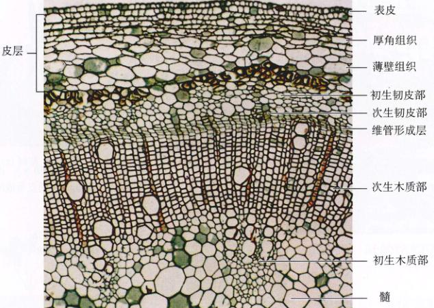
图 38.24 分化初期的蓖麻的维管形成层 (25×) 皮层的外侧由厚角组织构成，内侧则由薄壁组织构成。
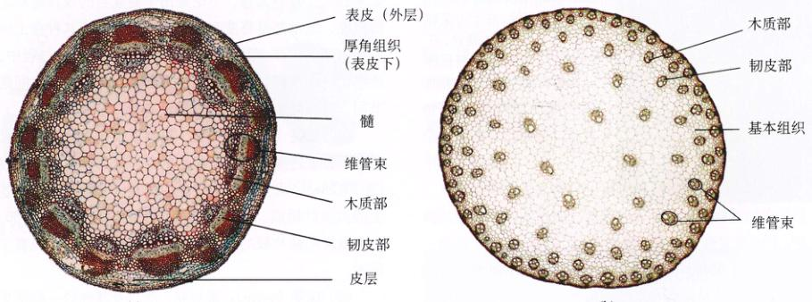
图 38.25 茎 (幼茎) 的横切面 (a) 双子叶植物向日葵 (Helianthus annuus) 的维管束环绕着茎的边缘排布 (10×)；(b) 单子叶植物玉米 (Zea mays) 的维管束则散生在茎中 (5×)。
维管形成层细胞不断地分裂，形成次生组织（主要是次生木质部和次生韧皮部）。树木中有大量的木质部，这就是木材。树桩上的年轮显示了树木的年生长状况；木质部细胞的大小随着生长条件的变化而变化。在木本双子叶植物和裸子植物中，外侧的皮层中（偶尔也出现在表皮或韧皮部中）会产生另一个形成层——木栓形成层 (cork cambium)。这一形成层可向外产生盒状的木栓层细胞 (cork cell)，也可能向内产生类似于薄壁组织细胞的栓内层 (phelloderm) 细胞。木栓形成层、木栓层以及栓内层统称为周皮 (periderm)（图 38.26）。木栓组织 (cork tissue) 细胞在形成后不久即被栓质化，并随即死去，这些细胞就形成了树皮 (outer bark)。木栓组织内的木栓层是疏水的，它们切断了表皮的养料和水分的供给，使表皮死去并脱落。在幼嫩的茎中，茎内组织与空气间的气体交换是通过气孔孔进行的，木栓形成层在形成木栓的过程中，会在气孔下方产生一片未被栓质化的细胞，使得气体交换能够继续进行。这些未栓质化的细胞形成了皮孔 (lenticel)（图 38.27）。
Page 18 / 原始页码 744
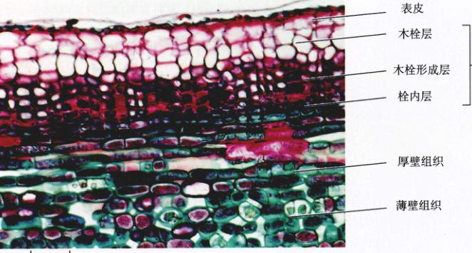
图 38.26 周皮切面 (50×) 白杨树 (Populus sp.) 中周皮形成的最初阶段。
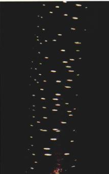
图 38.27 皮孔 (a) 樱桃李 (Prunus cerasifera) 树皮上大量的小的灰色的隆起区域，即皮孔。它们允许木本植物树皮下的活组织与大气进行气体交换。由于不同植物的皮孔有着很大的差异，冬季常利用皮孔的特征辨认落叶植物和灌木。(b) 美洲接骨木 (Sambucus canadensis) 的茎，经过皮孔处的横切面 (30×)。
茎尖分生组织的活动产生了茎的组织和器官，包括叶，并最终形成了茎。茎尖分生组织在茎叶相连处生出新的分生组织。这些分生组织能形成芽，芽又能重复顶芽的生长模式或直接形成花。
38.4.2 变态茎
虽然大多数的茎都直立生长，仍有一些茎具有如营养繁殖等一系列的特殊功能（图 38.28）。实际上，广泛运用的人工营养繁殖，不论是出于商业目的或仅是私人的兴趣，通常都是将变态茎切成小段，并将其种入土中长出新的植株。在你熟悉下面的这些变态茎的过程中，请牢记一个准则：茎的节上生有叶，相邻两个节之间是节间，叶腋处生有芽，而根却没有任何叶、节和腋芽。
(1) 鳞茎 (bulb)：洋葱、百合以及郁金香有着膨大的地下茎，这些茎上长有很大的芽，基部则生有不定根（图 38.28a）。大多数的鳞茎是由长在一个较小的瘤状茎上的肉质叶组成。在洋葱地面以上的绿色长叶的基部，生有纸样的鳞片般的叶片，它们将这些肉质的叶包裹了起来。
(2) 球茎 (corm)：番红花、剑兰及其他的一些常见的观赏植物长有与鳞茎非常类似的球茎。但是，将一个球茎对半破开后是看不到肉质的叶的。实际上，大多数的球茎的外部都生有一些不具任何功能的棕色的纸状的叶，基部则长有不定根。
(3) 根状茎 (rhizome)：多年生的草本、蕨类植物、鸢尾以及很多其他植物具有根状茎。典型的根状茎水平地长在地下，通常非常接近于地面（图 38.28b）。每个节上都长着一片很不显眼的鳞片状的叶，叶腋处生有腋芽。从根状茎的顶端将长出大得多的能进行光合作用的叶。根状茎各处均长有不定根，但大多数不定根都长在靠下的一侧。
(4) 纤匍枝 (runner) 与 匍匐茎 (stolon)：草莓所长出的一种水平茎具有很长的节间，与根状茎不同的是，这些茎通常贴着地面生长。一株植物能放射性地长出好几条纤匍枝（图 38.28c）。有些植物学家也将纤匍枝称为匍匐茎，而另一业植物学家所指的匍匐茎却是在长在地面以下的茎，这些茎也有很长的节间，在爱尔兰马铃薯中就能看到这种茎。然而，爱尔兰马铃薯实际上是另一种变态茎，即块茎。
Page 19 / 原始页码 745
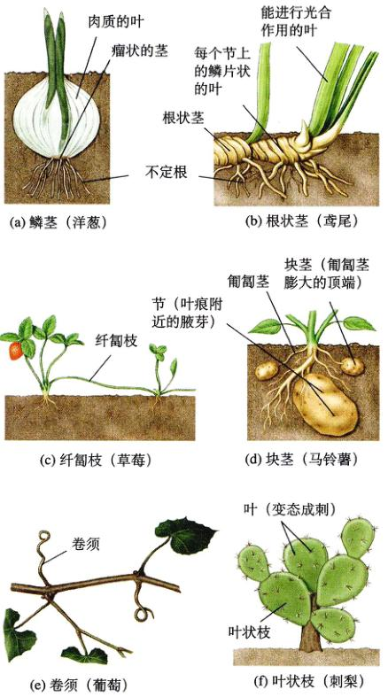
图 38.28 各种变态茎 (a) 鳞茎（洋葱）；(b) 根状茎（鸢尾）；(c) 纤匍枝（草莓）；(d) 块茎（马铃薯）；(e) 卷须（葡萄）；(f) 叶状枝（刺梨）。
(5) 块茎 (tuber)：在爱尔兰马铃薯中，碳水化合物会积累在匍匐茎的末端，这些部位就逐渐膨大最终形成块茎，块茎成熟后匍匐茎也就死去了（图 38.28d）。马铃薯上的芽眼就是长在鳞片状的叶腋处的腋芽。这些鳞片状的叶在马铃薯开始形成时就已经存在了，很快就脱落，而成熟马铃薯的每个芽眼附近细小隆起实际上就是一个叶痕。
(6) 卷须 (tendril)：很多攀缘植物，如葡萄和波士顿常春藤形成了称之为茎卷须的变态茎。这些卷须缠绕在支持物上以帮助攀爬（图 38.28e）。有些植物如南瓜和豌豆中的卷须，实际上是变态的叶或小叶。
(7) 叶状枝 (cladophyll)：仙人掌及其他的一些植物生有扁平的可以进行光合作用的茎。这些茎由于形状似叶被称为叶状枝（图 38.28f）。在仙人掌中，真正的叶已经变态为茎上的刺。
有些植物生有变态茎。这些茎具有特殊的功能：如储存养分、支持植株以及营养繁殖。
38.5 叶的结构适应于实现植物的基本功能
38.5.1 叶的外部结构
叶由顶端分生组织产生的原基 (primordia) 形成（图 38.2），众所周知，它们对生命至关重要。它们是陆生植物进行光合作用的最主要的场所。叶的扩展主要通过细胞的长大以及一定细胞的分裂来实现。像我们的手臂和腿一样，叶是植物的有限生长的结构 (determinate structure)，这意味着一旦发育成熟就停止生长了。叶对植物非常重要，因此它们的排列、形式、大小以及内部结构也都非常重要，而且变化多端，不同的类型适应于不同的环境。
叶实际上是茎尖分生组织和茎的发育的延续。叶最初以原基的形式出现。在茎的部分，我们已经讨论过这一内容。在这一阶段，茎和叶不一定会发育为叶。对蕨类植物和鞘蕊花（唇形科）植物的叶原基的分离培养实验已证明了这一结论。如果原基是足够幼嫩，它们将形成一支完整的枝条，而不是一片叶子。因此，原基的定位和最初的细胞分裂，是在这些细胞进入叶的发育途径之前进行的。
从形态学角度可将叶分成两大类，这一划分可以反映出进化起源上的差异。小型叶 (microphyll) 仅有一条叶脉，当这条叶脉从茎的维管柱中分出来的时候，不会留下间隙。小型叶多数很小，并且主要与石松门 (Lycophyta)（参见第37章）有关。大多数植物的叶都是大型叶 (megaphyll)，这些叶有几条到多条叶脉不等。大型叶的输导组织从茎内的维管柱分出时，就会形成一个间隙。
大多数双子叶植物的叶都有扁平的叶片 (blade) 和纤细的叶柄 (petiole)。叶片扁平的过程反映了从辐射对称向背腹（上下）对称的转变。对于那些无法实现这叶片种转变的突变种，如金鱼草 (phantastica) 的研究，使我们开始了解这种转变是如何发生的（图 38.29）。
Page 20 / 原始页码 746
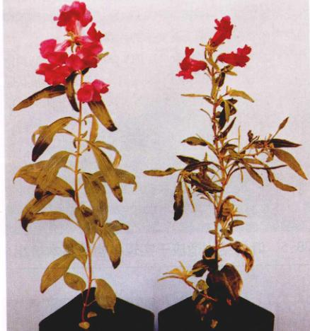
图 38.29 金鱼草的突变体 金鱼草的叶子通常上下扁平（左边的植株）。其实突变体（右边的植株）的叶子不再扁平，出现了辐射对称的脊。
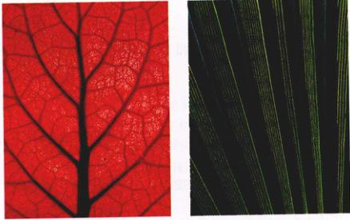
图 38.30 双子叶植物和单子叶植物的叶 双子叶植物的有网状的叶脉，例如 (a) 中的源于斯里兰卡的非洲紫罗兰的叶；单子叶植物的叶为平行叶脉，例如 (b) 中的美洲蒲葵的叶。图中双子叶的叶已经用化学试剂清洗并染色成红色，以便使叶脉更清晰显现出来。
此外，叶柄基部可能长有一对托叶 (stipule)。此外，叶托叶或者似叶状，或者变态为刺，如刺槐 (Robinia pseudo-acacia)，或变态为腺体，如樱桃李 (Prunus cerasifera)。托叶的大小变化也很大，有的极小，有的却可以有半张叶片那么大。托叶的发育可能独立于叶的其他部分。
草本及其他单子叶植物通常没有叶柄，它们的叶往往从茎的基部开始包裹着茎。叶脉 (vein)（即叶中的维管束）由韧皮部和木质部两部分组成，遍布整个叶片。大多数单子叶植物的叶，主要的叶脉都是平行的；而双子叶植物的叶脉却常常形成一个复杂的网络（图 38.30）。
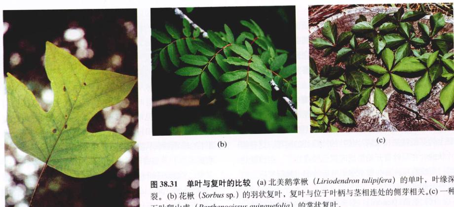
图 38.31 单叶与复叶的比较 (a) 北美鹅掌楸 (Liriodendron tulipifera) 的单叶，叶缘深裂。(b) 花楸 (Sorbus sp.) 的羽状复叶，复叶与位于叶柄与茎相连处的侧芽相关。(c) 一种爬山虎 (Parthenocissus quinquefolia) 的掌状复叶。
叶片的形状多种多样。有的呈卵圆形，有的深裂，还有的有单独的小叶。单叶 (simple leaf)（图 38.31a），如丁香和桦树的叶，它们的叶没有小叶，但是叶片可有齿、锯齿状的边缘，或大小不同的裂片（如枫树和橡树的叶）。对于复叶，如白蜡、羽叶械和胡桃的叶却分成很多小叶 (leaflet)。复叶 (compound leaf) 发育间的关系尚是一个谜，现由两种解释：一种认为复叶是高度深裂的单叶，另一种解释则认为复叶的发育是采用了枝条的发育模式。有一种复叶变成单叶的单突变株可以用来解释这一争论。如果复叶的各片小叶沿着共同的轴成对排列（这条轴叫作 racbis，相当于主叶脉以及单叶的主脉），这种叶就叫做羽状复叶 (pinnately compound)（图 38.31b）。然而，如果这些小叶是从叶柄的叶片端的一个共同点放射状排列的，那么这种叶就叫作掌状复叶 (palmately compound)（图 38.31c）。掌状复叶可见于七叶树 (Aesculus ssp.) 和五叶爬山虎 (Parthenocissus quinquefolia)。叶片本身可能与其叶脉有相似的排列，因此被称为具有羽状或掌状叶脉的叶片。
Page 21 / 原始页码 747
不论是单叶还是复叶，可能互生 (alternately)，互生时通常绕着枝条呈螺旋状排列，每个节上只有1片叶，也可能对生 (opposite)，即每个节上有2片叶。3片或多片叶可以轮生 (whorl)，即一个节上有一圈叶，但这种情况较少见（图 38.32）。
叶是光合作用的主要场所。叶片有很多排列方式。单叶仅有一个叶片，而复叶则由2片或多片小叶组成。
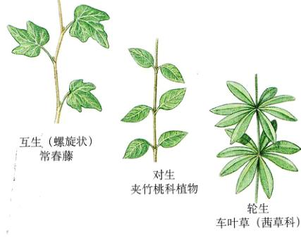
图 38.32 叶序的类型 3 类常见的叶序为互生、对生和轮生。
38.5.2 叶的内部结构
叶的整个表面都覆盖着透明的表皮，大多数表皮细胞不含有叶绿体。表皮有厚度不等的蜡质的角质膜，也可能具有各种各样的腺体和毛状体。大多数叶的下表皮（鲜见上表皮）有裂缝样或是口样的气孔（图 38.33）。我们在前面已经提到过，气孔被两个保卫细胞包围，起着进行植物体内水及气体进出叶的作用。
上表皮和下表皮间的组织叫做叶肉 (mesophyll)。叶肉中散布着各种大小的叶脉（维管束）。大多数双子叶植物的叶有两类不同的叶肉组织细胞。最靠近上表皮的叶肉，是 1~2 列（通常是 2 列）紧密排列的栅栏状的柱形绿色细胞（含有叶绿体的薄壁组织细胞），它们组成了叶肉中的栅栏组织 (palisade mesophyll)（图 38.34）。有些植物如桉属 (Eucalyptus) 植物的叶，低垂着而非水平伸展，这些叶的两侧都有栅栏组织，这种叶实际上没有上表面。在几乎所有的叶中，栅栏组织和下表皮间都排列疏松的海绵组织 (spongy mesophyll)，其整个组织中有很多间隙。这些彼此相连的细胞间隙与气孔一道起着气体交换的作用，并成为水蒸气从叶中散失的通道。单子叶植物的叶肉没有栅栏组织和海绵组织之分，而上表皮和下表皮通常也几乎没有差异。这种解剖学上的差别通常与一种改进的光合作用途径有关。这一途径能增加 CO₂ 与 O₂ 的相对浓度来减少光呼吸中能量的损失（参见第10章）。叶的构造与叶平衡水分散失、进行气体交换以及与光合作用产物运输到植物体的其他部分的种种巧妙活动直接相关。
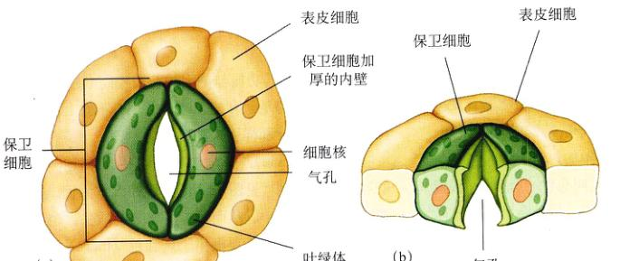
图 38.33 气孔 (a) 表面观；(b) 切面观。
叶是表皮围成的扁平袋子，里面含有维管组织、紧密排列的富含大量叶绿体的栅栏组织以及疏松排列有很多连通空隙的海绵组织，这些空隙在气体交换和水蒸气的散失过程中起作用。
Page 22 / 原始页码 748
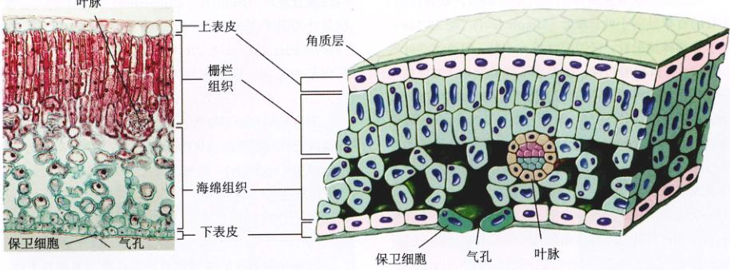
图 38.34 叶的横切面 叶的横切面照片显示了叶中栅栏组织和海绵组织的分布，有一个维管束即叶脉，表皮上有成对的保卫细胞围成的气孔。
38.5.3 变态叶
植物分布于多种多样的环境，从沙漠到湖泊再到热带雨林。为了适应自身生长的特殊生境，植物器官发生了一些变态。叶更是进化产生了一些特殊的适应机能。下面我们将对一些变态叶进行简单的讨论。
(1) 花样叶 (floral leaf)：也叫苞叶 (bract)。猩猩木和山茱萸的花均很小，很不显眼，绿黄色。然而这两植物都有很大的变态叶，称为苞叶 (bract)。猩猩木的苞叶多呈红色，而山茱萸的苞叶则为白色或粉红色。这些变态叶包围着花，其功能与艳丽的花瓣相同（图 38.35）。然而，值得一提的是，有些苞叶也很小，不像上述的两种植物的苞叶那样引人注目。
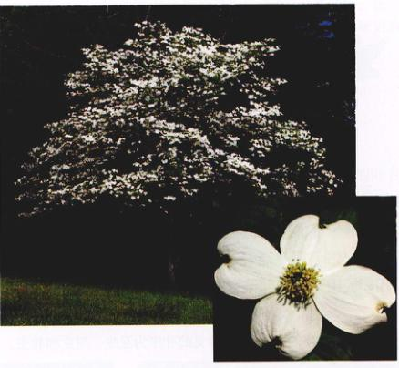
图 38.35 变态叶 在这朵山茱萸的“花”中，白色的苞叶（变态叶）围绕着中央几朵真正的花。
(2) 刺 (spine)：仙人掌、伏牛花以及其他一些植物的叶变成刺（见图 38.28f）。以仙人掌为例，这种叶使叶的表面积减小，从而减少了水分的散失，也可以抵挡捕食者。注意，不要混淆了刺和棘 (thorn)，如三刺皂荚 (Gleditsia triacanthos) 的棘。实际上，棘是变态茎。也不要把这种刺和悬钩子以及玫瑰的皮刺 (prickle) 相混淆。后者是直接从表皮或表皮下的皮层中长出的突起。
(3) 生殖叶 (reproductive leaf)：有些植物，特别是灯笼草属 (Kalanchoe)（景天科）植物，其叶的边缘长着很多纤小但是完整的幼苗。当这些幼苗从叶上分离下来时，它们都能长成一株完整的植株。例如，一种步行蕨 Asplenium rhizophyllum 就会在复叶的顶端长出新的幼苗。虽然很多植物都有这种在叶上发育成新的完整植株的能力，但在自然界中，这种体内再生的现象却为少数种类所特有。
Page 23 / 原始页码 749
(4) 窗孔叶 (window leaf)：一些生长在干旱地区的某些属的植物，生有肉质化的圆锥形叶。这些叶的顶端是透明的。并有很厚的表皮和角质层。这种叶的大部分常被风吹来的沙所掩埋，但是阳光依然可以透过这些透明的顶端照进叶中。这样即使处于地面之下，叶依然可以进行光合作用。
(5) 阴影叶 (shade leaf)：同一株植物上，与受阳强光直射的那些叶相比，生长在阴影中的叶片具有更大的表面积，但叶片更薄而且叶肉较少。由于这两种叶事实上有着相同的基因，叶发育上的这种可变性是极其重要的。由此，我们可以看出环境信号在发育中发挥了重要的作用。
(6) 捕虫叶 (insectivorous leaf)：已知大约 200 种开花植物都有能够捕捉昆虫的叶，其中一部分植物甚至能够消化这些昆虫的柔软身体。这些具有捕虫叶的植物，大多生长在酸性的沼泽中。这些环境中，缺少植物生长所必需的一些营养元素，或者营养元素的存在形式无法被植物吸收利用，这就抑制了植物为满足生长需要而进行代谢过程的能力。为此，植物通过从动物那里吸收营养素来加以补充。
猪笼草 (pitcher plant)（例如，*Sarracenia*, *Darlingtonia*, *Nepenthes*）的叶呈圆锥形，里面可以积聚雨水。叶的内表面十分光滑，但叶的边缘却有针尖状朝向底部的硬毛。掉进这样一片叶中的昆虫几乎无法逃脱，并最终淹死在雨水中。细菌和多种消化酶分解了昆虫的尸体，分解产生的营养物质就被叶所吸收。另外的一些植物，如茅膏菜属 (*Drosera*) 的茅膏菜 (sundew)，其叶有分泌黏液的腺体，被黏液粘住的昆虫将被消化酶所消化。捕蝇草 (flytrap) 叶的主脉就像一条以此。它们的叶片上长着一些纤细的触毛。当这些毛被爬行的昆虫触动时，两片叶片的两边就会突然合拢。昆虫的柔软部分就会被消化酶分解，成为营养素而被叶的表面所吸收。氮是最常见的一种必需无机营养素。但奇怪的是，在富含氮的环境中，捕蝇草根本无法存活。或许在精巧的进化过程中，形成了一种补偿，致使捕蝇草获得了捕捉和消化昆虫的能力。
植物的叶显示出各种各样的适应形式，如刺、营养繁殖，有的叶甚至具有食肉功能。
(叶欣 范为民 张岑 谢莉萍 译校)
Page 24 / 原始页码 750
小 结
38.1 种子萌发后分生组织精心构建植物体
- 植物体本质上就是由根和带叶的枝条这两部分组成的。植物体由分生组织或胚细胞形成了3种基本的组织类型：基本组织、表皮组织及维管组织。
38.2 植物有3种基本的组织，每种组织由几种类型的细胞组成
- 表皮形成植物外部的保护层。
- 基本组织支撑植物体，储存养料和水分。
- 维管组织将水分、糖类以及可溶性矿物质运输到植物体的各个部位。木质部将水分和矿物质从根运输到枝条和叶。韧皮部将营养物质从产生处运输到植物体的各个部位。
38.3 植物根部的细胞在远离不断分裂的根尖分生组织的过程中不断分化
- 根有4个生长区：根冠、分生区、伸长区和成熟区。
- 有些植物有变态根。这些根适应于进行光合作用、储藏养分和水分、支撑植物体以及寄生等功能。
38.4 茎是植物枝条的骨架，起着运输营养物质和支撑植物地上器官的作用
- 植物的分支通过初生顶端分生组织产生的芽来实现。芽位于茎和叶的交接处。
- 维管形成层存在于裸子植物和双子叶植物的根和茎中。它是一个圆排列成圆筒状的分生细胞组成。它们的活动使植物加粗。
38.5 叶的结构适应于实现植物的基本功能
- 叶是以突起的形式出现在分生组织中，它们有着多种多样的形状。大多数的叶都沿着茎呈螺旋状排列。这些突起逐渐伸长，在它们变扁平的过程中，它们的辐射对称性逐渐消失。
- 光合作用发生在基本组织系统中，这一系统在叶中被称为叶肉。维管组织形成了叶脉。它们常既是水分运输的终点，又是光合作用的产物即糖的运输起点。
问 题
- 植物的3种基本组织系统是什么？它们具有哪些功能？
- 木质部的功能是什么？初生木质部和次生木质部的起源有什么不同？木质部中两类主要的运输细胞是什么？
- 韧皮部的功能是什么？
- 比较单子叶植物和双子叶植物的根。这两种根中组织的排布有什么不同？
- 侧根是怎样形成的？
- 维管形成层向外分裂产生何种细胞？向内分裂和侧向分裂呢？
- 为什么单子叶植物没有次生生长？
- 单叶与复叶有什么区别？请指出并描述一下3类常见的叶序。
媒体资源
- 实践活动：茎尖结构
- 初生分生组织的结构
- 植物的维管系统
- 基本组织
- 表皮组织
- 维管组织
- 实践活动：双子叶植物根的结构
- 根
- 实践活动：双子叶植物茎的结构
- 次生生长
- 草本双子叶植物茎的结构
- 实践活动：植物体的解剖构造
- 叶的结构
- 叶
- 小测验：气孔、离层